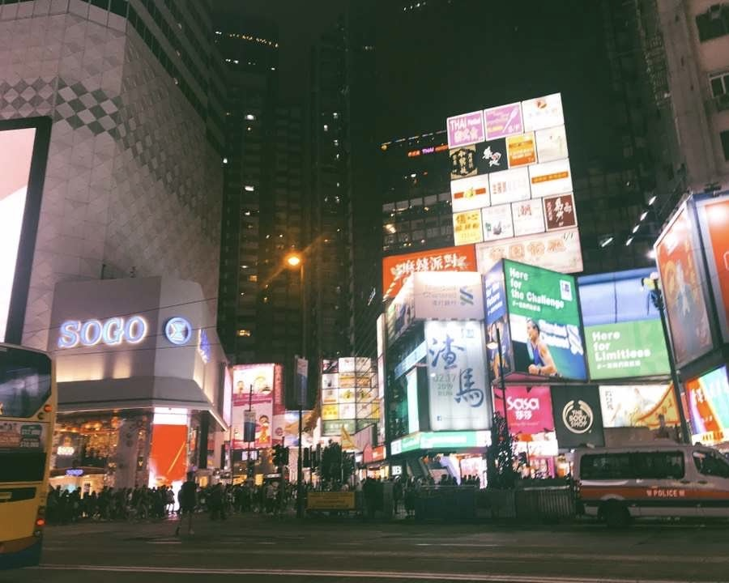
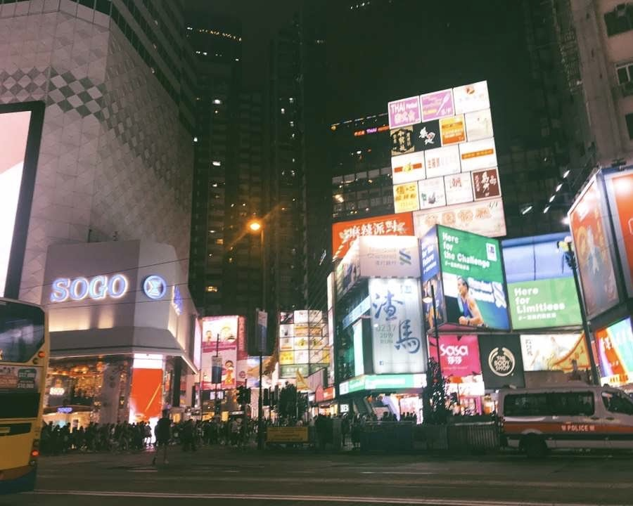

In 2023, for visiting one of my best high school friends.
This time I went to Hong Kong alone. I took a 14-hour long-distance flight from New York to Hong Kong to visit my good friends in high school. My friend is currently studying at the University of Hong Kong. At the same time, this is also my first time visiting a Hong Kong university after many visits to Hong Kong.
Under the guidance of a friend, I visited her school and listened to her talk about her current college life. Together with her, I missed the life together every day in high school. When we meet after a year of separation, there are always endless things to talk about.
Click to know more about HKU.


 
